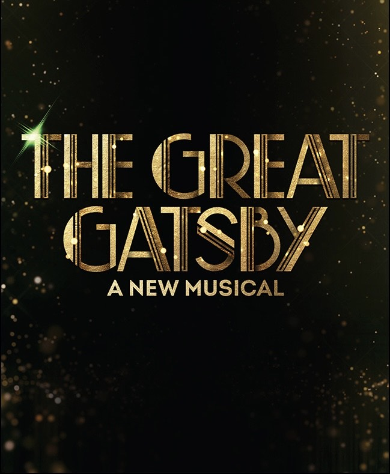

Hadestown is a 2019 musical with music, lyrics, and book by Anaïs Mitchell. It tells a version of the ancient Greek myth of Orpheus and Eurydice in a hellish industrial version of the Greek underworld. The myth itself is a tragedy and the show embodies the emotions of such in a jazz-like musical format.
Broadway Musicals That Have My Heart

Newsies: The Musical is a 2012 musical with music by Alan Menken, lyrics by Jack Feldman, and a book by Harvey Fierstein. The show is based on the 1992 musical film with the same name, which in turn was inspired by the real-life Newsboys Strike of 1899 in New York City, with Fierstein's script adapted from the film's screenplay by Bob Tzudiker and Noni White.

The Great Gatsby is a 2023 stage musical with music and lyrics by Jason Howland and Nathan Tysen, and a book by Kait Kerrigan. It is based on the 1925 novel of the same name by F. Scott Fitzgerald and embodied it in a lively musical format.

Beetlejuice: The Musical is a 2018 musical with music and lyrics by Eddie Perfect and book by Scott Brown and Anthony King. The show is based on the 1988 film of Beetlejuice while keeping the overall feeling/plot of the original Tim Burton movie.